Bakkerij in Nijmegen
Bloem, water,
zout. En tijd.
Iedere dag vers desembrood en viennoiserie, en de hele dag ontbijt en lunch. Loop gewoon binnen aan de Van Welderenstraat.
4,7 sterren uit 15 Google-reviews
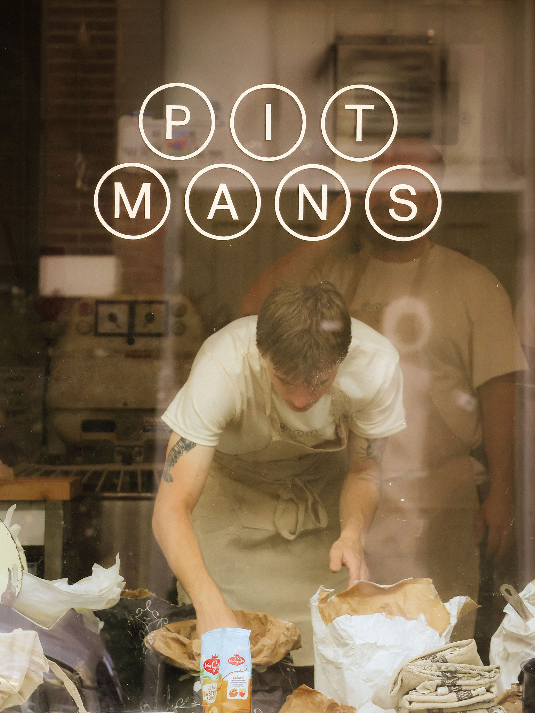
Elke dag open van 8:00 tot 15:00.
We werken zonder reserveringen: loop gewoon binnen.
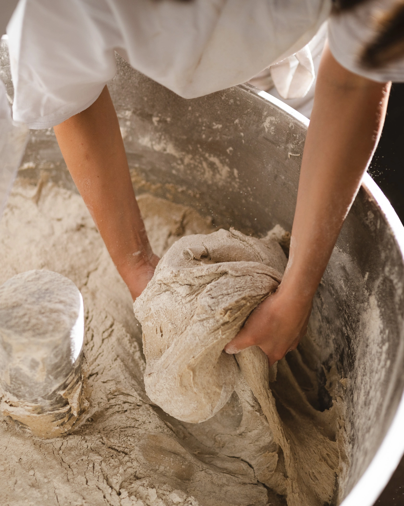
Meer heeft goed brood niet nodig.
Bij Pitmans begint alles bij het product. Ons desembrood bestaat uit bloem, water en zout, en we geven het deeg vooral veel tijd. We laten de natuur zoveel mogelijk haar werk doen en grijpen alleen in waar dat nodig is.
Ambachtelijk, maar niet ouderwets. Geen onnodige toevoegingen en geen poespas. Wel elke dag vers.
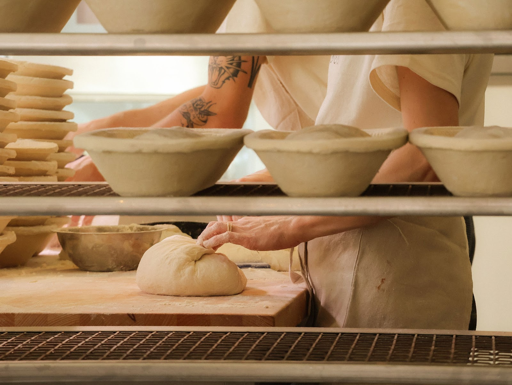
Brood reserveren kan niet. Kom op tijd, dan heb je de meeste keuze.
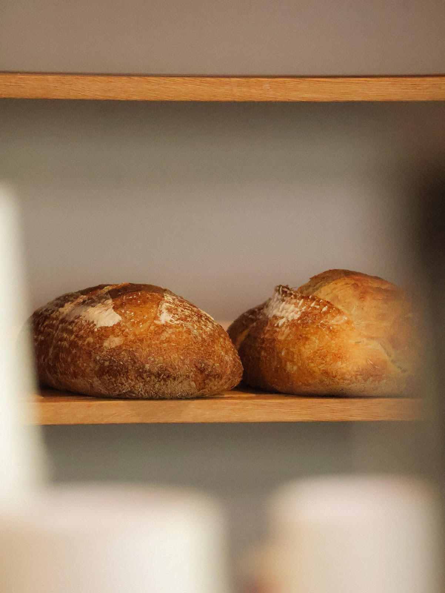
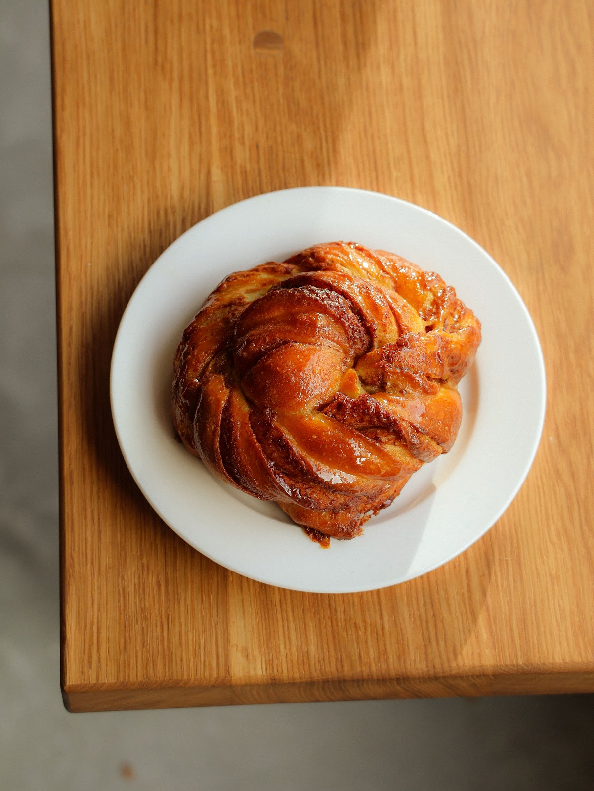
Tussen brood en patisserie in.
Daar zit de viennoiserie, en dat is precies de lekkerste plek. Denk aan croissants, pain au chocolat en andere baksels van rijk, vaak gelamineerd deeg met lekker veel boter.
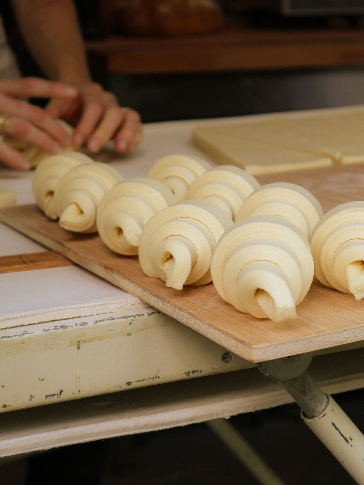
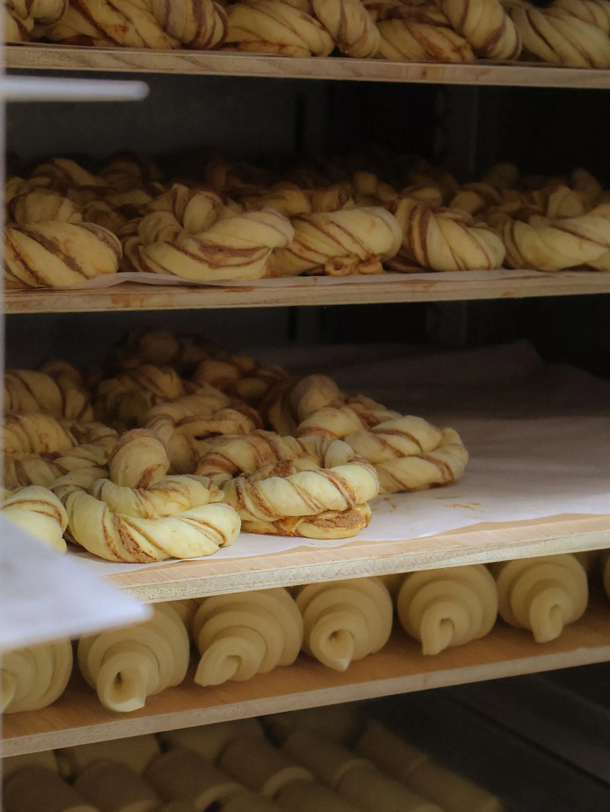
De hele dag ontbijt en lunch.
Op de kaart
- Ons eigen desembrood en viennoiserie als basis.
- Favorieten die het hele jaar blijven, en wat het seizoen brengt.
- Fruit zoveel mogelijk uit de regio.
- Koffie van goede bonen van Blommers.
- Vegetarische en vegan opties.
We houden het graag dichtbij, vers en vooral heel erg lekker. We werken zonder reserveringen: loop gewoon binnen en we kijken of er plek is.
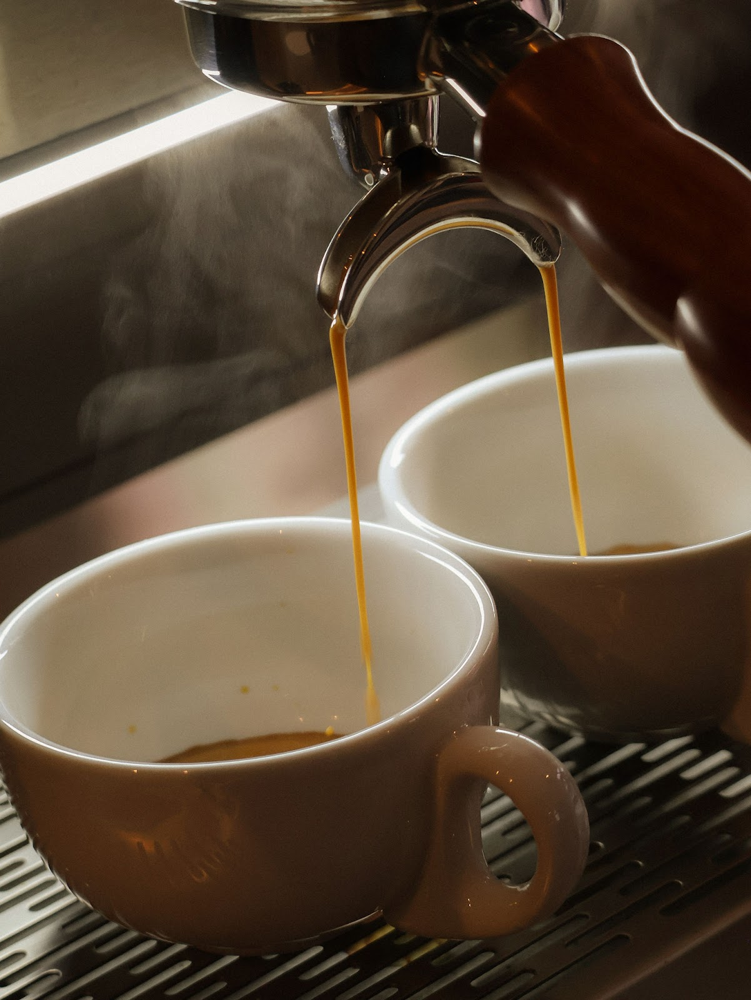
“Fijne mensen, heerlijk brood en goede sfeer! Aanrader voor je dagelijkse brood maar ook de beste croissants en andere lekkernijen”
4,7
sterren uit 15 Google-reviews
“Leuke nieuwe bakkerij in centrum Nijmegen, zuurdesem brood absoluut aanrader!”
“Deze mensen zijn erg vriendelijk en ze weten hoe ze brood moeten bakken. Het eten is heel goed, probeer kip dragon en crossiant ❤️”
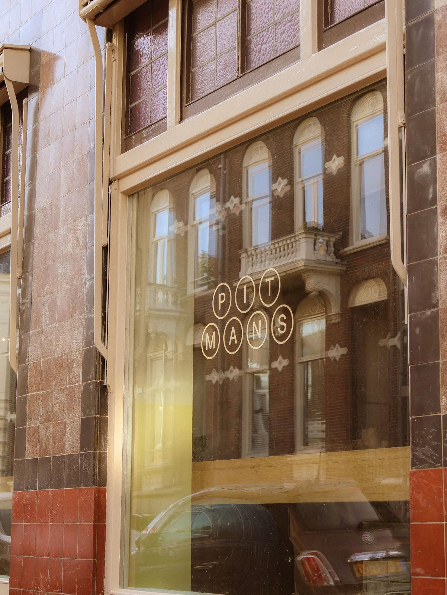
De naam zat al in Nijmegen verstopt.
Toen Klein het brood van Boulangerie Karel in Arnhem proefde, was de gedachte vrij snel geboren: zo’n bakkerij hoort ook in Nijmegen. Het idee bleef een tijd op de plank liggen, tot de juiste plek voorbijkwam en Klein & Karel besloten het samen te doen.
In 1909 opende Gerret Anneveldt hier de Pitmanschool, waar Nijmegen leerde stenograferen en typen volgens het systeem van Isaac Pitman. Later kwamen daar handelsopleidingen en talen bij en werden er zelfs wedstrijden sneltypen gehouden.
Die geschiedenis zie je terug: stenografie duikt op in het ontwerp en de typische oude letterbakken krijgen een nieuwe plek in de bar.
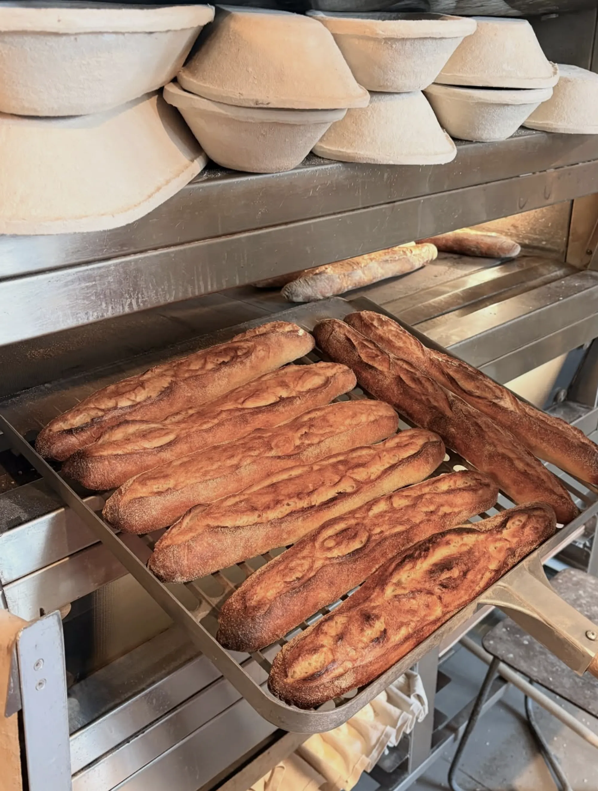
Ook voor de horeca.
Van blond brood en campagne tot baguettes en andere producten uit onze bakkerij. We leveren in Nijmegen en omgeving en bezorgen is in overleg mogelijk.
Kom langs en proef ons brood, of neem contact met ons op.
Mail over leveringLiefde voor brood? Kom erbij.
Een nieuwe bakkerij betekent ook een nieuw team. We zoeken mensen met liefde voor brood, koffie en het vak. Mensen die graag aanpakken, nieuwsgierig zijn en blij worden van een plek waar altijd iets gebeurt. Ervaring is mooi, enthousiasme minstens zo belangrijk.
Een open sollicitatie mag altijd.
Mail je sollicitatie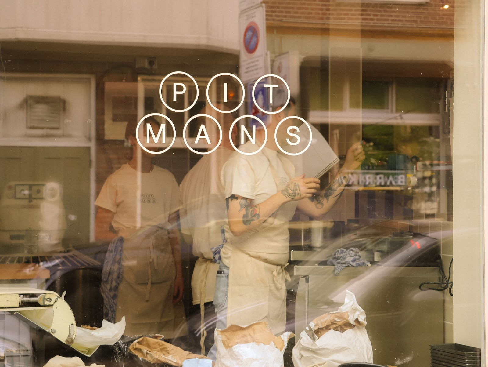
Goed om te weten
Kan ik brood reserveren?
Nee, brood reserveren is niet mogelijk. Voor de meeste keuze kun je het beste op tijd langskomen.
Kan ik reserveren voor ontbijt of lunch?
Nee, we werken zonder reserveringen. Loop gewoon binnen en we kijken of er plek is.
Houden jullie rekening met allergieën en dieetwensen?
We hebben vegetarische en vegan opties. Met andere allergieën en dieetwensen kunnen we helaas niet altijd rekening houden. Vraag ons gerust wat er mogelijk is.
Is Pitmans toegankelijk voor mindervaliden?
Ja, het pand is toegankelijk voor rolstoelen. Er is echter geen mogelijkheid om gebruik te maken van het toilet.
Hoe bewaar ik mijn brood het beste?
In een afgesloten zak of broodtrommel voor een zachte korst, of in de papieren zak voor een krokante korst. Langer bewaren? Vries het vers en gesneden in.
De volgende dag weer zin in warm en krokant brood?
Piep het ongeveer 10 minuten op in een voorverwarmde oven op 200 graden en het is weer lekker krokant.
Vrienden van Pitmans
Om ons heen zitten vrienden die ieder op hun eigen manier bezig zijn met goed eten en drinken op mooie plekken in Arnhem en Nijmegen.
- Boulangerie Hotel Karel
- Café Klein
- Clamato
- Franco James
- Bistrot Kareltje
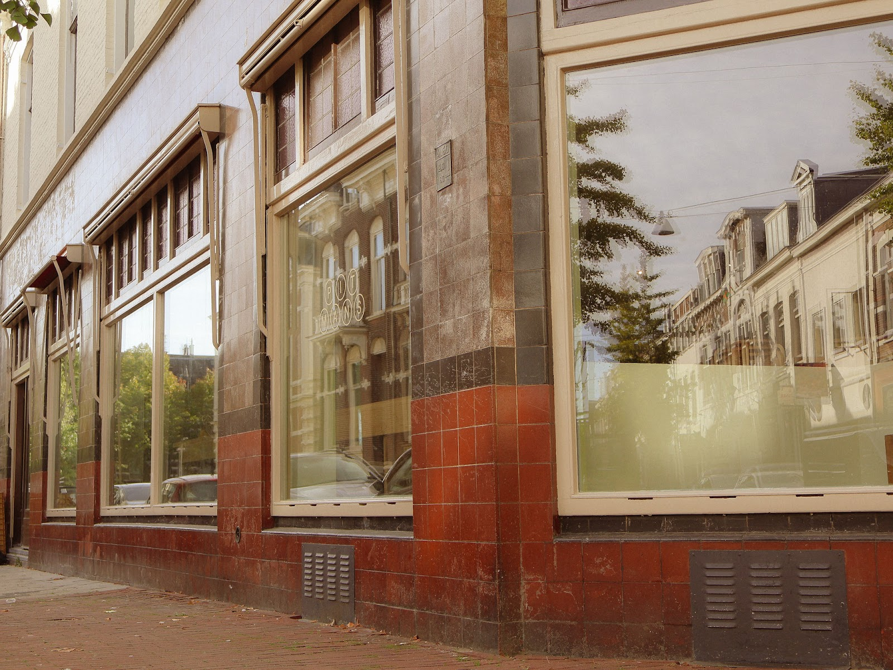